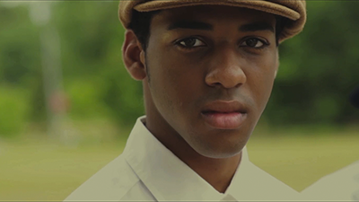
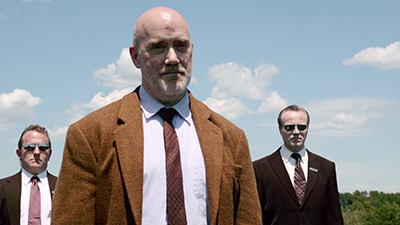
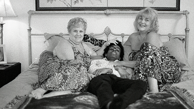
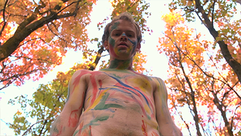
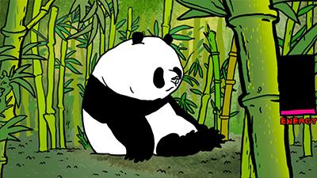
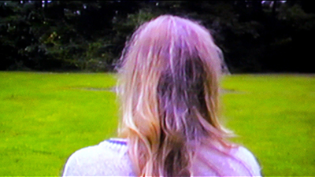
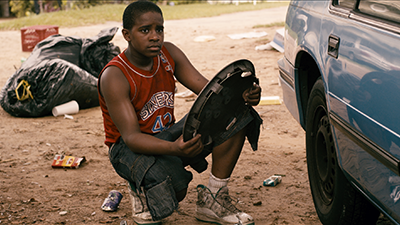
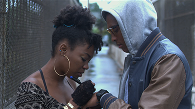
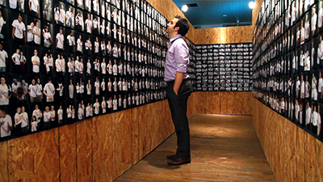

VISIONS 4 FILMS
Director: Nathalie Fortunel
A Reel Farewell highlights the importance of celluloid film projection at a film University. For people who work closely with this medium, they especially feel a great sense of nostalgia for this art form that is quickly being replaced by digital projection. This film explains celluloid film and why it has been a vital asset in the history of cinema.
Director: Stephen Goza
Director: Rachel Woolf
Beyond the Wall explores the obstacles that former prisoners face as they reinvent themselves and reintegrate into society. Through the personal story of Raymond Roe, this film challenges the negative public perception of formerly incarcerated people.

Director: James Benton
In the 1930s South, an ambitious but insecure valedictorian is given the opportunity to deliver his speech in front of the board of education. In what he thought was an occasion to be vindicated turns into a nightmare of survival.

Director: Bruce X. Li
Jason Bourne and Blood Diamonds comes to Middle School. It is 2001. Gunn, a student experienced in trading illegal contrabands, acts as a liaison between traders. Now he's got to pull one last job to win the girl he loves - Felicia - who has an agenda of her own.

Director: Michael Kefeyalew
Director: Ashley Graham
A little girl gets taken to the land of the dead, where she learns the true meaning of the Mexican holiday, Dia de los Muertos
Director: Kristen Wilson

Director: Curtis Whitear
Director: Jon Kasbe
Ben is searching for purpose. Masi is following a dream. From separate islands, yet connected through music, their paths crossed at Fiji's Beat Making Lab. The Beat Making Lab believes music can transform individuals and communities. They build studios around the world, training youth in the art of beat making.
Director: Eliza Bryan
A poetic portrait of an eclectic instrument repair shop located in Raleigh, NC.
Director: Robert Edmondson
m.o.t.i.o.n.m.o.v.i-e posits the dissociation inherent to framed viewing as exacerbated and performed by the camera within and outside of commercial modes of transportation.

Director: Matúš VIzár
After millions of generations they have a good chance of becoming another extinct species. But one day, I am all too active primate called the human being found them and they became a pawn in a man’s game.
Director: Kevin C. Herron
A film about a bird desiring a luxury home, and seizes the opportunity one day when an old lady falls asleep at the park.

Director: John Palmer
An autonomous sensory meridian response involved journey inside the minds of a couple in the last days of their relationship.
Director: Whitney Polk
Travel into the world of an exciting feline adventure.

Director: Michael Kefeyalew
On a hot summer day, Kenny and his new sidekick Three-Stacks ride their bikes around the hood on the hunt for hubcaps. When unexpectedly confronted about their wrong ways, they find out more about each other than they expected.

Director: Zach Wechter
Straight Down Low is a neo-noir set in the inner city. A shrewd high school detective must solve a curious gangland crime to protect the girl he loves.

Director: Daniel Koehler
In this inspiring story from the struggle for marriage equality, a photographer takes up his camera to fight a proposed amendment to the North Carolina Constitution.
Five films will be selected to receive awards for Best Narrative Film, Best Documentary, Best Animation, and Best Experimental. One filmmaker or scholar will be selected to receive the Visionary Award, which honors film students whose unique voice and boundary-breaking work in their field aligns with the Festival mission. One film and one scholar will also be selected for the Audience Choice Awards. Video race teams will also be eligible for the 1Hour/1Take Audience Choice Award. All awards will be presented at the After Party.